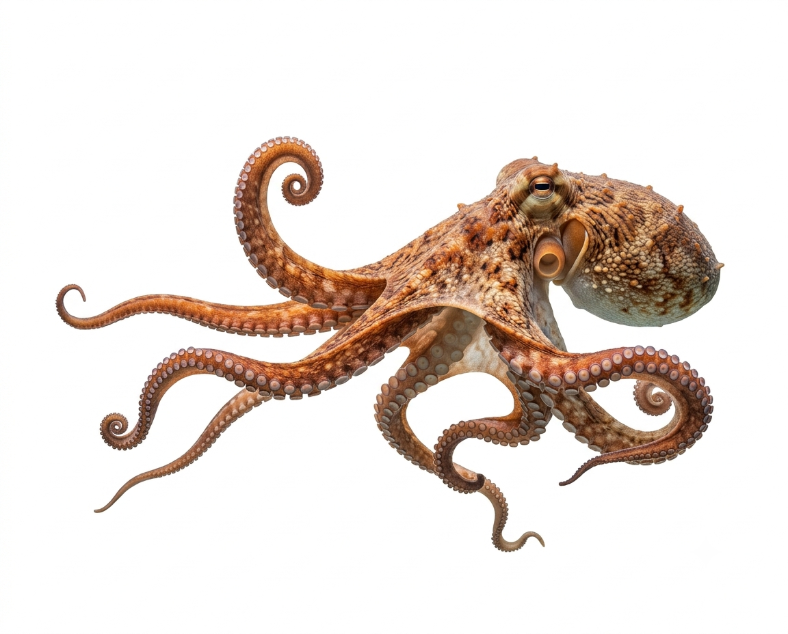
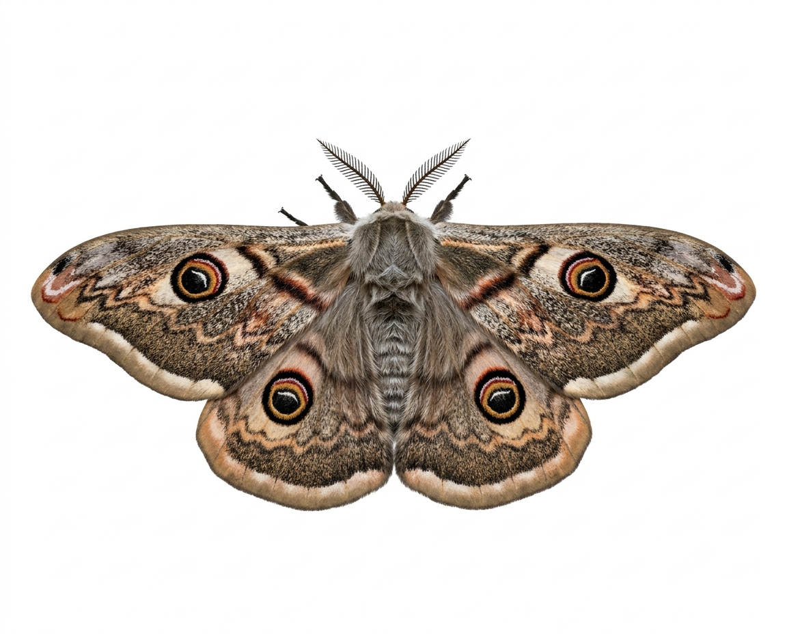
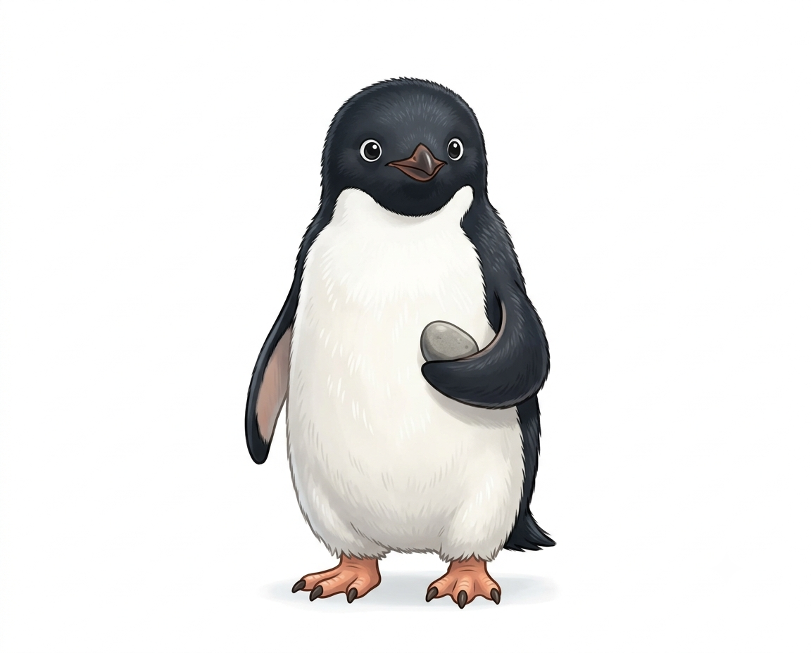
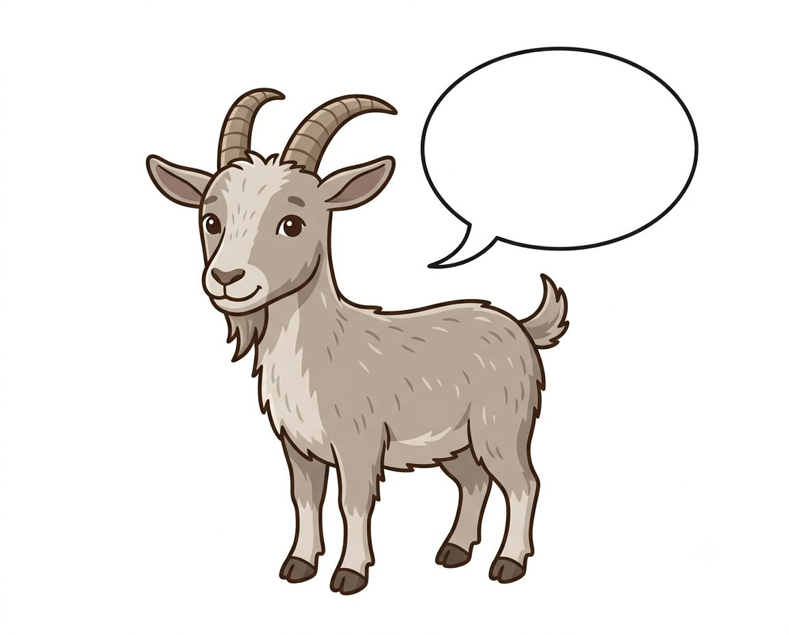

Meu primeiro post
Por: Eduarda Freitas
Boas-vindas ao meu novo blog! Aqui vou compartilhar curiosidades da área de biologia.
Vou compartilhar curiosidades sobre biologia
Por: Eduarda Freitas
Boas-vindas ao meu novo blog! Aqui vou compartilhar curiosidades da área de biologia.

Por: Eduarda Freitas
Além de possuírem oito braços, os polvos não têm apenas um, têm três corações. Dois deles trabalham exclusivamente para bombear sangue para as guelras, com a função de liberar dióxido de carbono (CO2) e receber oxigênio (O2).
O terceiro coração do polvo é responsável por circular o sangue para os órgãos e músculos, o que os ajudam a ter energia.
Não bastasse tanta curiosidade, o terceiro coração para de bater quando o animal nada. Até por isso, esse molusco marinho tem uma tendência em rastejar em vez de nadar.
Fonte: Blog Cobasi

Por: Eduarda Freitas
O olfato mais aguçado existente natureza é o do macho da mariposa imperador que segundo experimentos feitos na Alemanha em 1961, pode detectar a substância sexual produzida pela fêmea virgem à distância de 11 Km, contra o vento. Os receptores localizados nas antenas do macho são tão sensíveis que são capazes de detectar uma única molécula de substância.
Fonte: Só Biologia

Por: Eduarda Freitas
Sim, é isso mesmo! Alguns pinguins machos realizam um ritual de cortejo semelhante ao dos humanos: em vez de um anel, oferecem uma pedrinha ou pedra polida à fêmea com quem esperam formar um ninho e acasalar.
Fonte: Blog Cobasi

Por: Eduarda Freitas
Cabras desenvolvem sotaques únicos conforme o grupo em que vivem! Pesquisadores da Queen Mary University London descobriram que, ao separar cabritos em grupos, cada um criou sua própria marca vocal. Isso fortalece os laços e facilita a identificação entre os membros.
Fonte: Blog Cobasi
Por: Eduarda Freitas
Como uma inteligência invejável, os corvos da Nova Caledônia, no oceano Pacífico, tem a capacidade de planejar vários passos à frente o que quer fazer para chegar a um objetivo, como se alimentar.
Um estudo divulgado pela Current Biology, descobriu que os corvos têm a capacidade de usar três ferramentas para conseguir chegar até alimentos, transformando galhos em lanças e ganchos que usam para comer larvas.
Fonte: Blog Cobasi